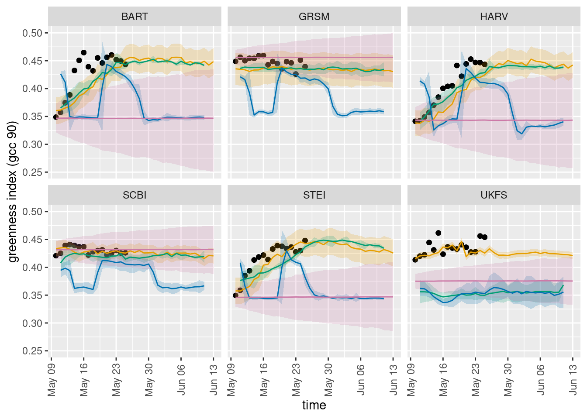

Phenology
Most recent forecasts
Below is the latest forecasts for which we have at least 15 observations

Greenness
Overall model_id rankings by forecast skill, as well as skill by date of initial forecast.
Top plots: Forecast skill measured by CRPS and log skill. Lower values indicate better predictions. Both score probabilistic forecasts, but log skill penalizes observations outside expected range much more heavily.
Lower plot: Many phenology teams submit a new 35-day forecast daily. This plot summarizes the score of each of those 35-day forecasts (over all 35 days and over all sites) as the challenge progresses. Note how the scores of most teams are worst in spring and fall as leaves come out and fall!
Tip: Mouse over a color to highlight the scores of one a team